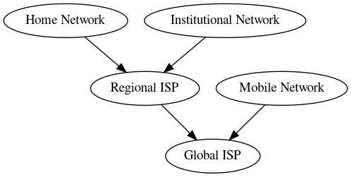
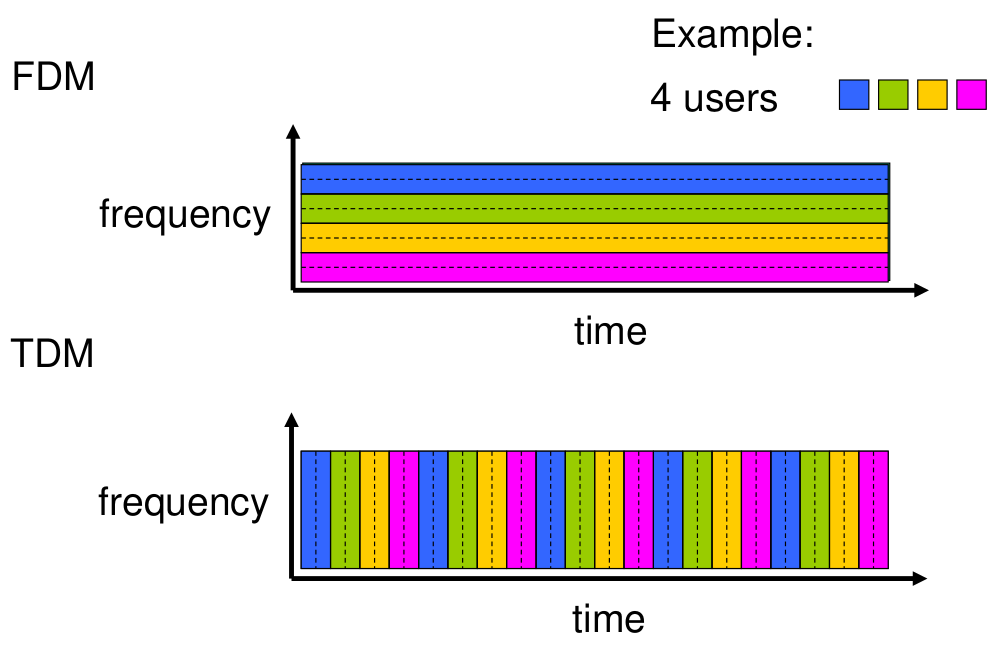
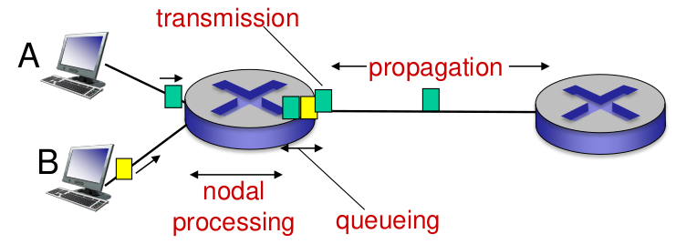
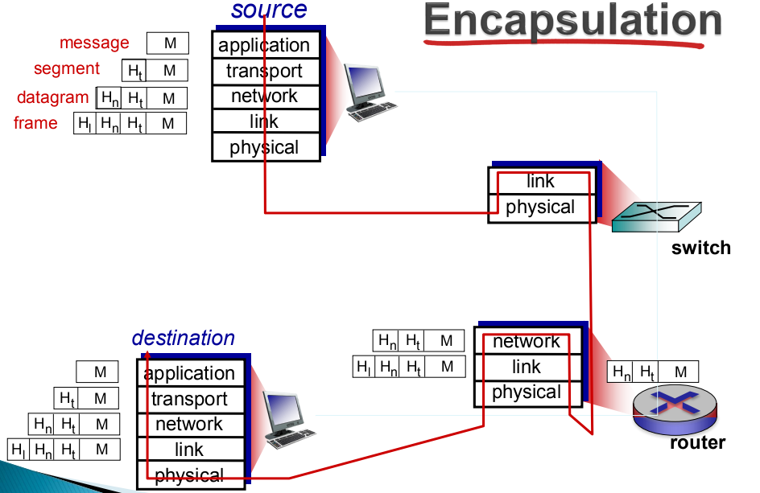
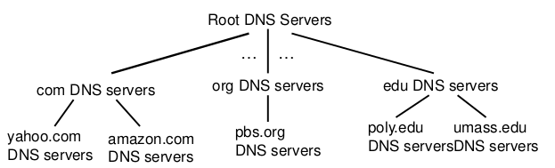
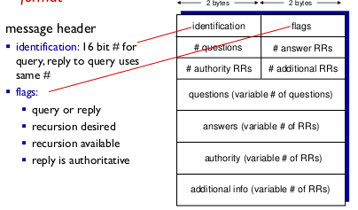
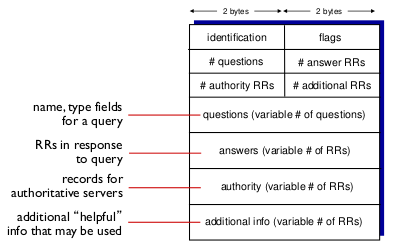

Networks 2
Table of Contents
- 1. On the Exam
- 2. IP Calculator
- 3. Cloud Computing
- 4. Internet Structure
- 5. Delays
- 6. Internet protocol stack
- 7. Layers
- 8. The application layer
- 9. HTTP Connections, Application layer
- 10. Email
- 11. Cookies
- 12. Transport layer - TCP vs UDP
- 13. Transport Layer
- 14. Transport Layer, TCP
- 15. DNS
- 16. Network Layer
- 17. Link Layer
- 18. Recap, overview of a request
1 On the Exam
- Cloud
- Transport protocol (video streaming)
- Network layer
- Link layer, reading material
3 Cloud Computing
3.1 What is Cloud Computing?
- Cloud computing is the delivery of computing services - servers, storage, databases, networking, software, analytics and more - over the internet (the cloud)

3.2 Goal
- Is to apply traditional super-computing, or high-performance computing power, normally used by military and research facilities, to perform tens of trillions of computations per send, in consumer-oriented applications
3.3 Characteristics
Business will secure cloud-hosting services from the usual software vendor
- Access to services and the power to change those services via a control panel
- Add or delete user and change storage networks and software as needed
- Billed with a monthly subscription or a pay-for-what-you-use scenario
Broad network access
- Access business management solutions from any device
- Access the resources from Mobile Devices in particular
Resource pooling
- Allow employees to enter and use data within the business management software hosted in the cloud at the same time, from any location, and at any time
Rapid elasticity
- Cloud is flexible to needs
- Cloud is scalable to needs
- Add/remove users, features, resources
Measured service
- Pay for what you use
- Measure storage levels, processing, bandwidth, number of user accounts and get billed appropriately
- Control and monitor
3.4 Cloud Deployment Models
Public Cloud
- Set of hardware, networking, storage, services, applications and interfaces owned and operated by a third party for use by other companies or individuals. Highly scalable.
- Highly scalable
- Viable due to repetitive and/or straightforward workload, e.g. e-mail
- Storage or computing services are optimized thanks to the use of hardware and software for this particular use case
Private Cloud
- Set of hardware, networking, storage, services, applications and interfaces owned and operated by a third party for use by other companies or individuals
- Highly controlled environment not open for public consumption
- Sits behind a firewall
- Highly automated with a focus on governance, security and compliance
- Business rules and processes can be implemented inside software, making the environment predictable, manageable and automated
Hybrid Cloud
- Combination of private cloud with a us of public services
- The goal is to combine services and data form a variety of loud models to create a unified, automated, and well-managed computing environment
- Applies when
- Company uses a public development platform that sends data to a private cloud or a data center-based application
- When a company leverages a number of SaaS applications and moves data between private or data center resources
3.5 Cloud Service Models

IaaS
- Self-service models for accessing, monitoring, and managing remote datacenter infrastructures, such as:
- Computing services
- Storage services
- Networking services
- Instead of purchasing hardware, the user can purchase IaaS based on consumption, just like electricity
- The user is responsible for application, data, runtime, middleware and OS maintenance
- Providers manage virtualization, servers, hard-drives and networking
PaaS
- Used for applications and other development, while providing cloud components
- Developers get a "ready-made" framework they can build upon applications
- Makes the development, testing and deployment quick, simple and cost-effective
- PaaS allows you to create applications using software components that are built into the PaaS
SaaS
- Represents the largest cloud market and quickly growing
- Uses the web to deliver applications that are managed by a third-party vendor
- Most SaaS can be run directly from a Web browser
- Eliminates the need to install applications on devices
- All backend is managed by the vendor:
- Applications
- Runtime
- Data
- Middleware
- OS
- Virtualization
- Servers
- Storage
- Networking
3.6 Advantages of cloud computing
Cost Saving
- No server storage and application requirements
- No extra power costs, air conditioning and administration
- Pay-as-you-go
- Affordable
Reliability
- Managed services are much more reliable than an in-house platform
- Most providers give 24/7/365 99.99% reliability
Manageability
- Enhanced and simplified management and maintenance
- Central administration of resources
- No maintenance or infrastructure update, hence all is provided by the vendor
- All accessible through a web interface
Strategic Edge
- Ever-increasing computing resources give you a competitive edge over the competition
- Deploy mission critical applications without upfront costs and minimal provision time
- Cloud allows to forget about technology and focus on your key business activities and objectives
- Reduce the time to market newer applications and services
3.7 Disadvantages of Cloud Computing
Downtime
- Vendor might be overwhelmed
- Suspension of business processes
- Inability to access any of applications, and/or data
Security
- Storing data on external servers always poses a risk
- Providing the vendor with important business data
- Public service is open to security challenges
Vendor Lock-In
- Switching cloud vendors is usually difficult, since each have their own infrastructure
- Difficult to migrate from one service to another
- Switching might cause interoperability and support issues
Limited Control
- Minimal control on the customer's behalf
- Cannot control the backend infrastructure if required
- Shell access, updates and firmware management may not be passed to the customer
4 Internet Structure
4.1 Hosts: End systems
- Takes the message from an application
- Breaks the message into smaller chunks (packets) of length L bits
- Transmits packet into access network at transmission rate R

- Example of transmission time
- L = 7.5 Mbits
- R = 1.5 Mbps
- One hop transmission is 5 sec
4.2 Network Edge
- Hosts: Clients and servers
- Servers: Often in data centers
4.3 Physical media
Types
- Bit: propagates between transmitter/receiver pairs
- Physical link: what lies between transmitter and receiver
- Guided media: signals propagate in solid media: copper, fiber, coax
- Unguided media: signals propagate freely: radio
- Twisted pair (TP): two insulated copper wires: Cat 5, Cat 6
Communication links
- Fiber
- Huge data transfer rates
- Huge distance via repeaters
- Used by ISPs and continental links
- Copper
- Capable of big transfer rates
- Good distance
- Used mainly by ISPs
- Radio
- Great distance
- Slower speeds
- Used in WiFi, mobile networks, etc.
- Satellite
- Huge area coverage
- Slower speeds due to distance-time delay
- Used by NASA and the like
4.4 Access networks
- DSL
- Cable
- Wireless access networks: WiFi, Mobile
- Home network
- Enterprise access networks
4.5 Network Core:
- Interconnected routers
- Network of networks
- Packet switching
- Forward packets from one router to the next
- Store and forward: entire packet must arrive before it is forwarded to the next link
- End-end delay = 2 * L/R
- Queuing and loss
- If arrival rate to the link exceeds transmission rate of the link then the packets will queue, if the buffer overfills the packets will be dropped
- Two core functions
- Routing: determines source-destination route taken by packets
- Forwarding: Move packets from router's input to appropriate router output
- Each router has a forwarding table that moves the packet to the needed output
- Alternative options of Network Core: Circuit Switching in which there is no network sharing, each router has a dedicated link to each other
- Does not suit networks with a lot of users
4.6 Hierarchy
- Mobile networks
- Global ISP
- Regional ISP
- Home Network
- Institutional Network 
4.7 Internet Standards
- RFC: Request for comments
- IETF: Internet Engineering Task Force
4.8 Infrastructure that provides services to applications
- Web
- VoIP
- games
- e-commerce
- etc.
4.9 Provides APIs
4.10 Protocols
- Protocol definition: is a set of standards that defines the format and order of transmission
- Some example types:
- TCP/IP
- HTTP
- Skype
- 802.11
4.11 Share access networks
- Limitation because of shared packet usage and bandwidth limitation
5 Delays
5.1 Packet data transmission delay
- Packet transmission delay = time neeeded to transmit L-bit packet into link = L (bits) / R(bits/sec)
- For example L = 8000 bits (one packet is 8000 bits), R = 100Mbps (speed), then it takes 0.00008s to transfer a packet. With the same values one can transfer 12,500 packets per second.
5.2 Packet Switching: queuing delay, loss
- If the receiving end has a much lower speed than the actual input then packets get lost and the transmission speed drops due to packets needing re-sending
5.3 Lookup table delay
- Routers take time to lookup the IP tables to know where to send the packet
5.4 Alternative: Circuit switching
- Routes are predefined so that the route does not need to be looked up
- The downside is that it predefined and does not ever get the potential full speed
5.5 Packet Switching vs Circuit Switching
- Packet switching provides full bandwith for a single user and a queue based packets for more users
- Circuit Switching allows to "slice" the bandwidth individually on a per-user basis
5.6 FDM vs TDM

5.7 Transmission delay
Is the time it takes to send a single bit
5.8 Propagation delay
Is the time to send a full packet
5.9 Four usual sources of delays
- Delay = transmission + propagation + nodal processing + queuing
- Transmission
- Propagation
- Nodal processing
- Check bit errors
- Determine output link
- Typically < msec
- Queuing

6 Internet protocol stack
- Applications, supporting network applications: FPT, SMTP, HTTP
- Transport, process-process data transfer: TCP, UDP
- Network, routing of datagrams from source to destination: IP, routing protocols
- Link, data transfer between network elements: Ethernet, 802.111 (WiFi)
- Physical: bits "on a wire"
7 Layers
- Hosts
- Routers
- Links of various media
- Applications
- Protocols
- Hardware, software
7.1 Layering
- Messages in the network are send between layers, and are composed of protocols
- Layers are used due to the complexity of the architecture and the different protocols
- Layers allow for an easier maintenance
7.2 Encapsulation

8 The application layer
- FTP
- SMTP
- HTTP
8.1 Application architecture types
- Client-to-server
- Server is always-on type host
- Server has a permanent IP
- Client communicates with the server
- Client may be connected intermittently, may have a dynamic IP
- Clients do not directly communicate with each other
- Peer-to-peer (P2P)
- No always-on server
- Arbitrary end-systems communicate directly
- Peers request services from other peers
- Peers are intermittently connected and change IP addresses
8.2 Processes communication
- Client process: process that initiates communication
- Server process: process that waits to be contacted with
8.3 Sockets
- Processes often use sockets for communication purposes
- Processes send/receive messages to/from its sockets
- Sockets are analogous to doors
8.4 Receiving messages
- One of the most important information that needs to be transferred is the indentifier
- Identifier contains the IP, protocol and port number. This exactly indicates the intent of the message
8.5 Application layer protocols
- Type of message exchanged: e.g. request, response
- Message syntax: what fields in messages and how fields are delineated
- Message semantic: meaning of information in fields
- Rules: how processes send and respond to messages
- Open protocol: defined in RFCs, allows for interoperability, e.g. HTTP, SMTP
- Proprietary protocol: e.g. Skype
8.6 Transport services that are necessary for an App
- Data integrity
- Some apps like Web browser require 100% reliability
- Some apps tolerate loss: e.g. audio, video
- Timing
- Some apps are OK with low delay to be effective
- Throughput
- Some apps require a minimum throughput
- Some apps are elastic in this area
- Security
- Encryption
- Data integrity

9 HTTP Connections, Application layer
9.1 Definitions
- Web's application layer protocol
- Persistent, allows for multiple objects to be sent over a single connection
- Non-persistent, only one object per connection is allowed
- RTT: time for a small packet to travel from client to server and back
9.2 Flow of a non-persistent connection
- Client initiates TCP connection to server over port 80
- Server accepts TCP connection from client
- Client requests a specific object
- Server sends object back, TCP connection closed
- Client receives object
- Repeat all steps for every object
- 2 RTT + file transmission, per objects
9.3 Flow for a persistent connection
- The server leaves the connection open after sending the initial response
- Subsequent HTTP messages are sent over the open connection
- As little as one RTT for all the referenced objects
9.4 HTTP request header
Example header

Format

9.5 HTTP response header
Example header

Status messages
- 200 OK - request successful, requested object in the body
- 301 Moved Permanently - requested object moved, new location specified in the Location: field
- 400 Bad Request - request message not understood by server
- 404 Not Found - Requested document not found on this server
- 505 HTTP Version Not Supported
10 Email
10.1 Major components
- User agents
- Mail servers
- Mailbox
- Message queue
- SMTP protocol
- Simple mail transfer protocol: SMTP
- Uses TCP on port 25
10.2 Sending phases
- Handshaking
- Transfer of messages
- Closure
10.3 Email's life
- Alice composes a message to bob
- Alice sends the message via UA to the server
- The server contacts Bob's server via SMTP and TCP
- The server sends Alice's message to Bob's server
- Bob's mail server places the message in his mailbox
- Bob uses UA to read the message
10.4 Message format
- Header
- To:
- From:
- Subject
- Body
10.5 Mail access protocols
- SMTP: Send email
- POP: Retrieve email
- Authorize phase
- Transaction phase
- IMAP; Retrieve and manipulate emails on the server
- HTTP: Web-mail
11 Cookies
11.1 Components
- Cookie header line of HTTP response message
- Cookie header line in next HTTP request message
- Cookie file kept on user's hots, managed by user's browser
- Back-end database at web site
12 Transport layer - TCP vs UDP
12.1 TCP
- Reliable transport
- Between sending and receiving processes
- Flow control
- Sender won't overwhelm receiver
- Congestion control
- Throttle sender when network overloaded
- Does not provide timing
- Timing, minimum throughput guarantee, security
- Connection-oriented
- Setup required between client and server processes
12.2 UDP
- Unreliable data transfer
- Between sending and receiving process
- Does not provide
- Reliability, flow control, congestion control, timing, throughput guarantee, security, or connection setup
12.3 Usage
- TCP - SMTP, Telnet, HTTP, FTP, RTP
- UDP - HTTP, RTP, proprietary Skype
12.4 TCP and UDP
- Provide no encryption
- Clear text passwords sent into sockets traverse Internet
12.5 Securing via SSL
- Provides TCP with encryption
- Exists in the Application Layer
13 Transport Layer
13.1 Goals
- Provide logical communication between app processes running on different hosts
- Transport protocol run in end systems
- Sending side: breaks application messages into segments and passes them to the Network Layer
- Receiving side: reassembles segments into messages, passes to application layer
13.2 Protocols
- TCP - Reliable, in-order delivery
- Congestion control
- Flow control
- Connection setup
- UDP - unreliable, unordered delivery
- No-frills extension of "best-effort" IP
- No handshaking between sender and receiver
- Uses a checksum to validate the data
- Services not available
- Delay guarantees
- Bandwidth guarantees
13.3 Multiplexing/demultiplexing

13.4 Connectionless demultiplexing
- Created socket has host-local port number
- When creating a datagram to send into UDP socket, must specify
- Destination IP address
- Destination port number
- When host receives UDP segments
- Check destination port
- Direct UDP segment to socket with the port number
- Diagram

13.5 Connection-oriented demultiplexing
- TCP socket identified by a 4-tuple:
- source IP
- source port number
- destination IP
- destination port number
- Demultiplexing receiver uses all four values to direct segment to appropriate socket
- Server host may support many simultaneous TCP sockets
- Each socket identified by its own 4-tuple
- Web servers have different sockets for each connecting client
- Diagram

13.6 Reliable data transfer

- rdt1.0
- Underlying channel reliable
- No bit errors
- No loss of packets
- rdt2.0
- Checksum to detect bit flip errors
- Receiver sends an ACK or NAK to the sender to acknowledge the package
- Crucial flaw when the ACK/NAK is corrupted
- Stop and wait mechanism with sequence numbers
- Sender re-transmits if necessary
- rdt3.0
- Uses same principles as rdt2.0, but:
- Sender waits a "reasonable" amount of time for ACK
- Re-transmission if ACK not received
- If an unnecessary re-transmission occurs then the sequence number handles the duplicate
- rdt3.0 example operation

13.7 Pipeline protocols
- Sender allows multiple, "in-flight", yet-to-be-acknowledged packets
- Range of sequence numbers is increased
- Buffering at sender and/or receiver
- Two forms of pipelined protocols
- go-Back-N
- Sender can have up to N unACKed packets in pipeline
- Receiver only sends cumulative ACK. Doesn't ACK packets if there is a gap
- Server has timer for the oldest unACKed packet
- Selective repeat
- Sender can have up to N unACKed packets in pipeline
- Receiver sends individual ACK for each packet
- Server has timer for each unACKed packet
- go-Back-N
14 Transport Layer, TCP
14.1 Characteristics
- TCP provides reliable end-to-end data transmission using full-duplex buffered communication
- Strongly influences IP network performance
- Sets up and closes down the logical connection
- Reliable data transfer
- Flow control
- Congestion control
- TCP creates rdt service on top of IP's unreliable service
- Pipelined segments
- Cumulative ACKs
- Single Re-transmission timer, triggered by:
- Timeout event
- Duplicate ACKs
14.2 Segment structure

- Sequence numbers
- Byte stream number of first byte in segment's data
- Acknowledgements
- Sequence number of next byte expected from other side
14.3 Transmission of Seq and ACK

Sender events
- Data received from app, create segment with Seq number
- Seq number is byte-stream number of first data byte in segment
- Start timer if not already running
- Timeout
- Re-transmit segment
- Restart timer
- ACK received
- If ACK acknowledges previously unACKed segments: update what is know to be ACKed
Receiver events
- Arrival of in-order segment with expected Seq number. All data up to expected Seq number already ACKed
- Action: Delayed ACK. Wait up to 500ms for next segment. If no next segment, send cumulative ACK
- Arrival of in-order segment with expected Seq number. One other segment has ACK pending
- Action: Immediately send singly cumulative ACK, ACKing both in-order segments
- Arrival of out of order segment higher-than-expected Seq number. Gap detected.
- Immediately send duplicate ACK, indicating Seq number of next expected byte
- Arrival of segment that partially or completely fills gap
- Immediate send ACK, provided that segment starts at lower end of gap
Fast re-transmit
- If sender receives 3 ACKs for same data (triple duplicate ACKs), resend unACKed segment with smallest Seq number
14.4 Flow control
- Receiver controls the sender, so that the sender does not overflow receiver's buffer by transmitting too much, too fast
- Receiver announces his buffer size in the TCP header in the rwnd value
- rwnd enables the sender to check how many "in-flight" packets need to be sent
14.5 Connection management
- Before data exchange, sender and receiver "handshake"
- Agree to establish a connection
- Agree on connection parameters
- 3-way handshake

14.6 Congestion
- "Too many sources sending too much data too fast for network to handle"
- Different from flow control
- Causes lost packets and long delays
Approach
- Sender increases transmission rate (window size), probing for usable bandwidth, until a loss occurs
- Additive increase: increase cwnd by 1 MSS every RTT until loss detected
- Multiplicative decrease: cut cwnd in half after loss
15 DNS
- Distributed database, implemented in hierarchy of many name servers
- Application-layer protocol, hosts, name servers communicate to resolve names
15.1 Structure
- DNS service
- hostname to IP address translation
- Host aliasing
- Mail server aliasing
- Load distribution 
15.2 Processing
- Client wants IP from www.amazon.com
- Client queries root server to get the .com DNS server
- Client queries .com DNS server to get amazon.com DNS server
- Client queries amazon.com DNS server to get the IP address for www.amazon.com
15.3 Root servers
- There are 13 main logical root servers around the world
15.4 TLD, Top Level Domain servers
- Responsible for: com, org, net, edu, aero, jobs, museums and all other country domains, like .ie .co.uk etc.
15.5 Authorative servers
- DNS servers owned by organizations themselves
15.6 Local DSN name server
- Does not strictly belong to a hierachy
- Each ISP (ISP, company, university)
- When hosts make a DNS query, query is sent to its local DNS wher it is possibly cached, and thus making connections much faste
15.7 DNS resolution example
- Host want to contact cis.ait.ie and want the IP address
- Contacts the Local DNS server. The server replies "I don't know, ask the Root DNS server"
- Contacts the Root DNS server. The server replies "I don't know, ask the TLD DNS server"
- Contacts the TLD DNS server. The server replies "I don't know, ask the Authoritative DNS server"
- Contacts the Authoritative DNS server. The server replies "I now this, its….."
15.8 Caching
- Cached entries timeout after the interval time TTL
15.9 DNS records
- DNS records are stored in the RR (resource records)
- RR format
(name, value, type, ttl) type Anameis hostnamevalueis IP address
type NSnameis domain (eg. foo.com)valueis hostname of authorative name server for this domain
type CNAMEnameis alias name for some "canonical" (the real) namewww.ibm.comis reallyservereast.backup2.ibm.comvalueis canonical name
15.10 DNS protocol, messages
- query and reply have the same format  
16 Network Layer
- Transport segments from sending to receiving host
- On send encapsulate segments into datagrams
- On receive deliver segments to the Transport Layer
- Network layer protocols in every host, router
- Router examines the header in all IP datagrams passing through it
16.1 Two core functions
- Forwarding - move packets from the router's input to the appropriate output
- Routing - determine the route that the packet needs to take
16.2 Date Plane
- Local, per-router function
- Determines how datagram arriving on router input port is forwarded to router output port
- Forwarding function
16.3 Control Plane
- Network-wide logic
- Determines how datagram is routed among routers along end-to-end path from source host to destination host
- Traditional routing algorithms: implemented in routers
- Software-defined networking (SDN): implemented in (remote) routers
16.4 Datagram Format

16.5 Fragmentation and Reassembly
- MTU - maximum transfer size, largest possible frame
- An IP datagram can be divided (fragmented) into smaller due to a smaller MTU
- The datagram is the reassembled at the destination
16.6 IPv4
Definitions
- 32 bit identifier for host, router interface
- Interface - connection between host/router and physical link
- Routers typically have multiple interfaces
- Host usually has one or more interfaces (e.g. LAN, WiFi)
IP Addressing Classes

Subnet mask
- Device interfaces with same subnet part of IP address
- Is a number that defines a range of IP addresses that can be used in a network.
- Systems within the same subnet can communicate directly with each other, while systems on different subnets must communicate through a router
- Used to partition networks and limit traffic between them
- Hides the network part of a system's IP address and leaves only the host part as the machine identifier
- A common subnet mask for a Class C IP address is 255.255.255.0.
- IP address - subnet part is the high order bits, host part is the low order bits
Determining the subnet
- Step 1. Determine the class from the first octet
- 169.199.109.137 => 169 is in class B
- 255.255.255.192 is the given subnet
- Step 2. Use the class of the address to determine which octets are available for hosts
- Class B is Network, Network, Host, Host and thus:
- 169.199.109.137
- 255.255.255.192
- Step 3. Look at the host octet in the subnet mask. If no bits are set to one, there are no subnets. If any bits are set to one, proceed to step four
- 255.255.255.192 = 11111111 1100000000 (host octets only)
- Step 4. Count the number of 1s in the subnet mask and calculate 2n - 2
- 255.255.255.192 = 11111111 1100000000 = 10 ones, 210 = 1024 - 2 = 1022 usable subnets created
- Step 5. Count the number of zeros and raise 2n - 2
- 255.255.255.192 = 11111111 1100000000 = 6 zeros, 26 = 64 - 2 = 62 usable host addresses created
Dynamic Host Configuring Protocol (DHCP)
- Allow host to dynamically obtain its IP address from network server when it joins in
- Process
- Host broadcasts "DHCP discover" message
- DHCP sever responds with "DHCP offer" message
- Host requests IP address "DHCP request" message
- DHCP server sends address "DHCP ack" message
- DHCP also returns
- Address of first-hop router for client
- Name and IP address of DNS server
- Network mask
- Implementation

16.7 Network Address Translation (NAT)
- Local network uses just one IP address as far as outside world is concerned
- Range of addresses not needed from ISP
- Can change addresses of local machines without the knowledge of the ISP
- Can change ISP without changing local addresses
- Devices inside the local network not explicitly addressable by the outside world
16.8 IPv6
- Replace IPv4 since the amount of IPs is running out
- Header format speeds up processing/forwarding
- Header Changes to facilitate QoS
- Convering IPv4 to IPv6
- Tunneling - IPv6 datagram carried as payload in IPv4 datagram among IPv4 routers
17 Link Layer
17.1 Terminology
- Nodes - hosts and routers
- Links - communication channels: wired links, wireless, LANs
- Frame - encapsulates the datagram, packet of sorts
- Data-link layer - has the responsibility of transferring datagram from one node to physically adjacent node over a link
17.2 Link layer service
- Framing, link access: Encapsulate datagram into a frame, adding header and trailer
- Reliable delivery between adjacent nodes
- Flow control: Pacing between adjacent sending and receiving nodes
- Error detection: Errors caused by signal attenuation, noise; re-transmit data
- Half-duplex and Full-duplex: With half duplex, nodes at both ends of link can transmit, but not at the same time
17.3 Where is it implemented
- Network card, aka Network Interface Card (NIC)
17.4 Types of links
- Point-to-point:
- PPP for dialup
- Ethernet links
- Broadcast (shared wire or medium)
- Old Ethernet
- WiFi
- Upstream HFC (Hybrid fiber-coaxial)
- Multiple Access Protocol: Algorithm that determines how nodes share channel
17.5 MAC protocols
- MAC used locally to get frame from one interface to another physically-connected interface
- Channel Partitioning
- Divide channel into smaller pieces
- FDMA - Frequency division multiple access
- CSMA - listen before transmit
- Random Access
- Channel not divided, allow collision
- "Recover" from collision
- "Taking turns"
- Nodes take turns, but nodes with more to send will take longer
17.6 Address Resolution Protocol (ARP)
- Each IP node on LAN has a table with IP/MAC address mappings
- Used to lookup "where to send information", if the address is not in the ARP table then look further
18 Recap, overview of a request
18.1 First Step get IP, first-hop and DNS
- Connecting laptop needs to get its own IP address, address of first-hop router and address of DNS server: use DHCP
- DHCP request encapsulated in UDP, encapsulated in IP, encapsulated in 802.3 Ethernet
- Ethernet frame broadcast on LAN, received at router running DHCP server
- Ethernet demuxed to IP demuxed, UDP demuxed to DHCP
- DHCP server formulates DHCP ACK containing clients IP address, IP address of first-hop router and name and address of DNS server
- Encapsulation at DHCP server, frame forwarded (switch learning) through LAN, demultiplexing at client
- DHCP client receives DHCP ACK reply
18.2 ARP
- Before sending HTTP request, need IP address of www.google.com: DNS
- DNS query created, encapsulated in UDP, encapsulated in IP, encapsulated in Ethernet. To send frame to router, need MAC address of router interface: ARP
- ARP query broadcast, received by router, which replies with ARP reply giving MAC address of router interface
- Client now knows MAC address of first hop router, so can now send frame containing DNS query
18.3 DNS
- IP datagram containing DNS query forwarded via LAN switch from client to 1st hop-router
- IP datagram forwarded from campus network into Comcast network, routed to DNS server
- Demuxed to DNS server
- DNS server replies to client with IP address of www.google.com
18.4 TCP
- To send HTTP request, client first opens TCP socket to web server
- TCP SYN segment (step 1 in 3-way handshake) inter-domain routed to web server
- Web server responds with TCP SYNACK (step 2 in handshake)
- TCP connection established
- HTTP request sent into TCP socket
- IP datagram containing HTTP request routed to www.google.com
- Web server responds with HTTP reply (containing web page)
- IP datagram containing HTTP reply routed back to client